The heat equation on
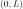
is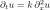
with , and the Dirichlet
problem on the rectangle asks for
, and the Dirichlet
problem on the rectangle asks for
 continuous on
continuous on 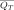
,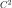
in and
and
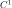
in inside, with
inside, with 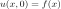
and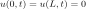
. The parabolic boundary is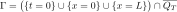
.
Let be as above and solve the heat equation in
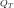
. Then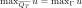
, and likewise for the minimum.
Fix  and put
and put
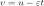
, so that . The function is
continuous on the compact , hence attains a maximum.
Suppose it is attained at a point
is
continuous on the compact , hence attains a maximum.
Suppose it is attained at a point 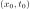
not on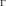
, so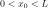
and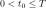
. At such a point has an
interior maximum in , so 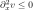
; and in the maximum is at the right endpoint or interior, so
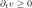
. Then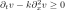
, contradicting the strict inequality. Hence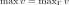
, and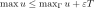
; letting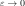
gives the claim. The statement for the minimum is this applied to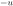
.The Dirichlet problem has at most one solution, and it depends continuously on the data: two solutions with data
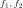
satisfy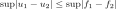
.
The difference solves the heat equation with zero boundary values on the
lateral sides and initial datum ; the maximum principle
bounds it, above and below, by the extremes of its parabolic boundary
values, which are  on the sides and at
on the sides and at  .
Taking
.
Taking
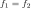
gives uniqueness.
Let  be continuous on
be continuous on
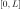
with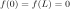
and Fourier sine coefficients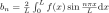
. Then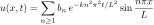
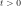
, is smooth there, and solves the Dirichlet problem.
Each term solves the equation and the boundary conditions, by direct
differentiation – this is what separation of variables produces, the
spatial factors being the eigenfunctions of the Sturm-Liouville problem
 with Dirichlet conditions.
with Dirichlet conditions.
The coefficients are bounded,
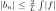
. For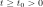
the terms and all their term-by-term derivatives are dominated by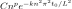
, summable; by the Weierstrass test the series and each differentiated series converge uniformly on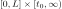
, so the sum is smooth there and may be differentiated term by term, hence solves the equation.
Continuity down to with value : the partial sums are the
Fourier partial sums of multiplied by factors in ![\([0,1]\)](m/b40f419d16d54b95652910807100bb67f190c2b6.svg) decreasing in
decreasing in  , and the Cesaro means of the sine series of a
continuous vanishing at the endpoints converge uniformly to it, so
the same splitting argument as for Fejer's kernel gives
, and the Cesaro means of the sine series of a
continuous vanishing at the endpoints converge uniformly to it, so
the same splitting argument as for Fejer's kernel gives
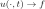
uniformly as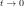
.The factors
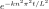
do the smoothing and the damage: for they kill high frequencies so fast that is
smooth however rough was, and for  they amplify them so
fast that the backward problem is ill posed – arbitrarily small changes
in the data produce arbitrarily large changes in the solution. That
asymmetry, visible in one line of the series, is the mathematical form
of irreversibility.
they amplify them so
fast that the backward problem is ill posed – arbitrarily small changes
in the data produce arbitrarily large changes in the solution. That
asymmetry, visible in one line of the series, is the mathematical form
of irreversibility.